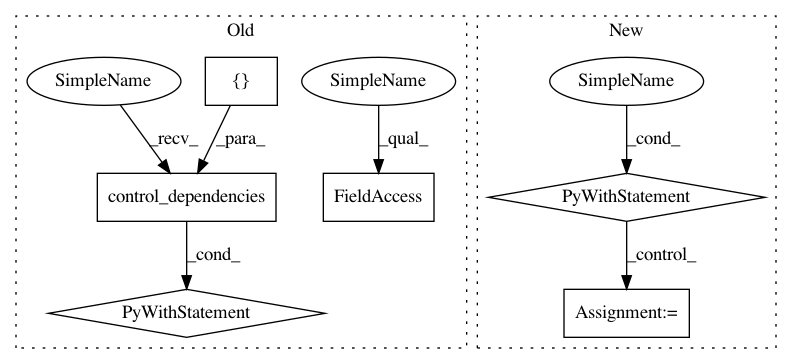

ecec43ee2dd7d21a08d68d00c668ea54bde03672,scripts/tf_cnn_benchmarks/benchmark_cnn.py,BenchmarkCNN,_run_eval,#BenchmarkCNN#,1600
Before Change
variable_mgr_init_ops = [local_var_init_op]
if table_init_ops:
variable_mgr_init_ops.extend([table_init_ops])
with tf.control_dependencies([local_var_init_op]):
variable_mgr_init_ops.extend(self.variable_mgr.get_post_init_ops())
local_var_init_op_group = tf.group(*variable_mgr_init_ops)
summary_op = tf.summary.merge_all()
// TODO(huangyp): Check if checkpoints haven"t updated for hours and abort.
while True:
self._eval_once(saver, summary_writer, target, local_var_init_op_group,
After Change
target = ""
// TODO(huangyp): Check if checkpoints haven"t updated for hours and abort.
while True:
with tf.Session(
target=target, config=create_config_proto(self.params)) as sess:
image_producer = None
try:
global_step = load_checkpoint(saver, sess, self.params.train_dir)
image_producer = self._initialize_eval_graph(
graph_info.enqueue_ops, graph_info.input_producer_op,
graph_info.local_var_init_op_group, sess)
except CheckpointNotFoundException:
log_fn("Checkpoint not found in %s" % self.params.train_dir)
else: // Only executes if an exception was not thrown
self._eval_once(sess, summary_writer, graph_info.fetches,
graph_info.summary_op, image_producer, global_step)
if image_producer is not None:
image_producer.done()
if self.params.eval_interval_secs <= 0:
break
time.sleep(self.params.eval_interval_secs)
return {}
def _build_eval_graph(self, scope_name=None):
Build the evaluation graph.
In pattern: SUPERPATTERN
Frequency: 3
Non-data size: 6
Instances
Project Name: tensorflow/benchmarks
Commit Name: ecec43ee2dd7d21a08d68d00c668ea54bde03672
Time: 2018-10-08
Author: reedwm@google.com
File Name: scripts/tf_cnn_benchmarks/benchmark_cnn.py
Class Name: BenchmarkCNN
Method Name: _run_eval
Project Name: tensorflow/benchmarks
Commit Name: ecec43ee2dd7d21a08d68d00c668ea54bde03672
Time: 2018-10-08
Author: reedwm@google.com
File Name: scripts/tf_cnn_benchmarks/benchmark_cnn.py
Class Name: BenchmarkCNN
Method Name: _run_eval
Project Name: reinforceio/tensorforce
Commit Name: 4251a86130e46e9d8a5e52ffc1c7f86bbd7f3f8a
Time: 2018-01-28
Author: aok25@cl.cam.ac.uk
File Name: tensorforce/core/preprocessing/running_standardize.py
Class Name: RunningStandardize
Method Name: tf_process
Project Name: GPflow/GPflow
Commit Name: d1ac7b831ad36cd0e4bdd7980819f83208345148
Time: 2018-02-07
Author: alex.ialongo@gmail.com
File Name: gpflow/expectations.py
Class Name:
Method Name: _expectation